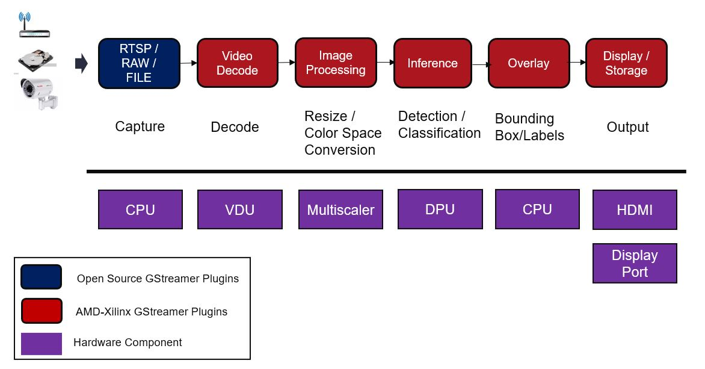

Vitis Video Analytics SDK (VVAS) for Data Center¶
The Vitis Video Analytics SDK for Data Center (also known as VVAS for Data Center) is a complete software toolkit providing a fast and easy way to develop AI-powered video analytics applications targeting AMD platforms such as the Alveo™ V70 accelerator card. It is an ideal choice for applications such as traffic analysis and pedestrians recognition in smart cities, health and safety monitoring in hospitals, self-checkout, retail analytics, defect detection, and many others.
With the Vitis Video Analytics SDK for Data Center, developers can use GStreamer or C APIs to create streaming pipelines integrating neural networks trained in TensorFlow or PyTorch and compiled with the Vitis™ AI development platform.
The Vitis Video Analytics SDK provides GStreamer plug-ins and C APIs to very easily interact with optimized hardware accelerators for tasks such as video decoding, resizing, color space conversion, and AI inferencing.
By performing all the compute-heavy operations of the streaming pipeline in optimized hardware accelerators, the Vitis Video Analytics SDK delivers best-in-class performance for video analytics applications.
Table of Contents¶
Getting Started¶
System & Hardware Requirements: Refer to Software & Hardware Requirements page to ensure your host system compatibility to use current VVAS Data Center solution.
Installation Guide: Refer to Installation Guide to follow step-by-step directions to install device, runtime, and VVAS related packages.
Quickstart tutorial: Refer to Quickstart Tutorial page to learn the core VVAS GStreamer plug-ins and their usability to built video analytics pipeline.
Features and Capabilities: V70 Versal ACAP offers best-in-class hardware for efficient video analytic task. To know the details spec, features of VDU, ABR Scaler, AI engine processor and its supported models (for deep learning inference) please refer Features and Capabilities page.
VVAS GStreamer Interface¶
GStreamer Plug-ins: For complete refernce of VVAS GStreamer plugins, their parameters, capabiltiies refer GStreamer Plug-ins page.
VVAS Meta Data Structures: Refer to the VVAS Meta Data Structures page to understand various GStreamer metadata structures defined by VVAS infrastructure.
VVAS Core API¶
VVAS C API Reference: For VVAS C API Reference manual, refer VVAS C API Reference page.
VVAS C API Guide: For VVAS C API general usage guideline for application development, refer VVAS C API Guide page.
VVAS C API Samples: For VVAS C API based sample applications refer VVAS C API Samples page.
Additional Information¶
Building and Installing from the VVAS source: To download, build and install from the VVAS source code for your specific development, refer Build and install from the VVAS source
Supporting Deep Learning Models: To understand the current model support and bring different deep learning models, refer Supporting Deep Learning Models
Device Management & Utility tools: To know how to use device specific management and utiliy tools refer Device Management & Utility tool page.
Debugging: Refer to the Debugging page for some debugging tips when using VVAS.
FAQ: Refer to the FAQ page for frequently asked questions and answers.